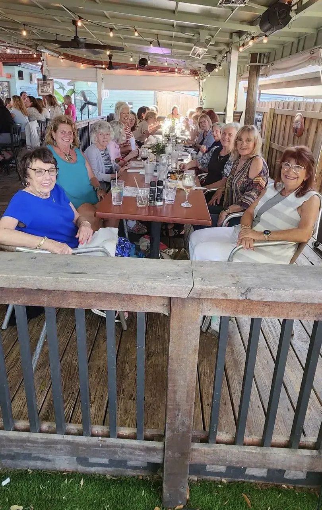
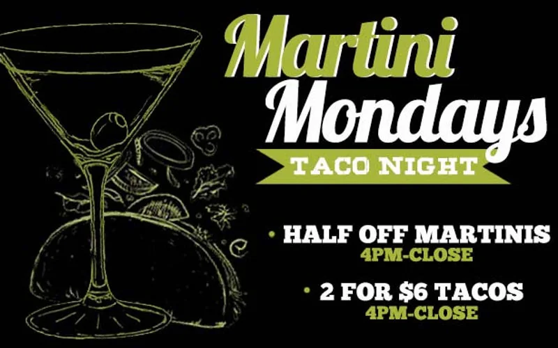

Daily Happy Hour
4:00 – 7:00 PM every day
Full liquor bar, crafted cocktails, Hip Sips, domestic and craft beer specials, and shareable plates from the kitchen. Perfect for an after-work stop before dinner on the patio.
915 Main Street · Safety Harbor
Downtown’s favorite patio pour — craft cocktails, Hip Sips, and 18 taps under the oaks.
Whistle Stop Grill & Bar has been Safety Harbor’s open-air hangout since 1995. When the afternoon light hits the patio, locals and visitors settle in for discounted drinks, bar bites, and the kind of easy conversation you only get on Main Street.
Mark your calendar — these are the standing happy-hour windows. Ask your server for today’s feature cocktail or tap rotation.

4:00 – 7:00 PM every day
Full liquor bar, crafted cocktails, Hip Sips, domestic and craft beer specials, and shareable plates from the kitchen. Perfect for an after-work stop before dinner on the patio.

4:00 PM – Close on Tuesdays
Tuesdays keep the party going with happy-hour pricing until close. Pair it with Martini Monday the night before — half-off martinis and 2-for-$6 tacos, 4 PM to close.
Our full-service bar sits at the heart of the Whistle Stop experience — not tucked in a back room. Bartenders pour everything from Gulf-inspired cocktails and frozen Hip Sips to a rotating list of Florida craft beer on tap. Most seating is open-air, so happy hour feels like a neighborhood block party with a view of downtown Safety Harbor.
Hungry? Happy hour pairs naturally with small plates, fried green tomatoes, and the burgers and sandwiches locals order year-round. Dietary questions? Our team knows the menu — just ask.

The same scenes you see in our gallery — friends raising a glass, bartenders shaking Hip Sips, and sunset light on Main Street.

Happy hour is the start of a lot of great Main Street evenings. Stack these weekly favorites with your visit.

League night at 6 PM with happy hour 4 PM – close. Bags, beer, and bragging rights on the patio.
Event details
Open mic Tuesdays and featured artists Friday & Saturday — check the calendar for who’s on stage this week.
Lineup
From fried green tomatoes to Gulf grouper — fuel up before the second round. Full menus online.
View menusPlanning a group? Call (727) 726-1956 or see private events for larger parties on the patio.